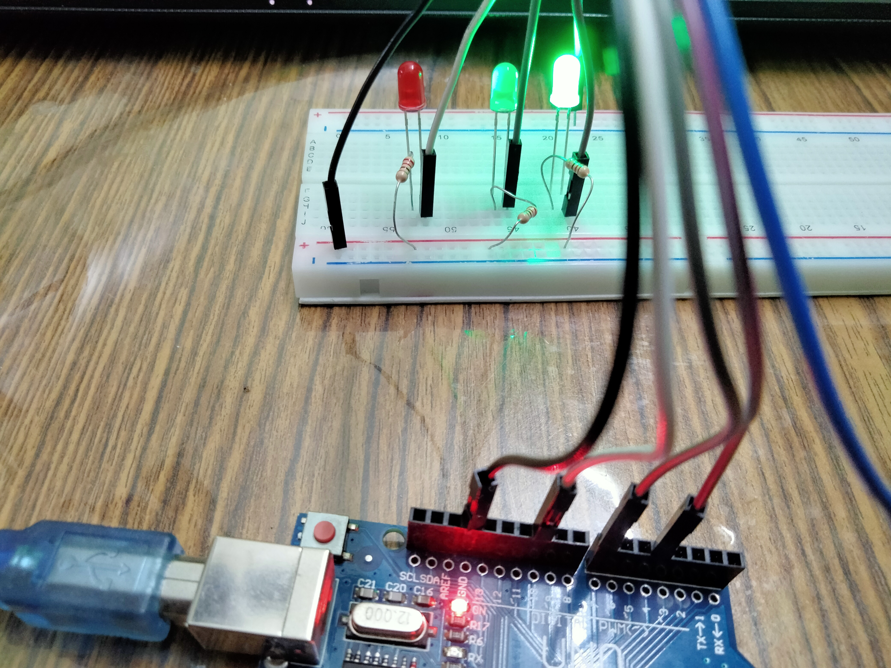

Experiment 2 : Traffic Light
Components required
- Arduino Uno Board
- USB Cable
- Red M5 LED*1
- Yellow M5 LED*1
- Breadboard
- Breadboard jumper wires* several
- Green M5 LED*1
- 220Ω resistor *3
Output

- Arduino Uno Board
- USB Cable
- Red M5 LED*1
- Yellow M5 LED*1
- Breadboard
- Breadboard jumper wires* several
- Green M5 LED*1
- 220Ω resistor *3